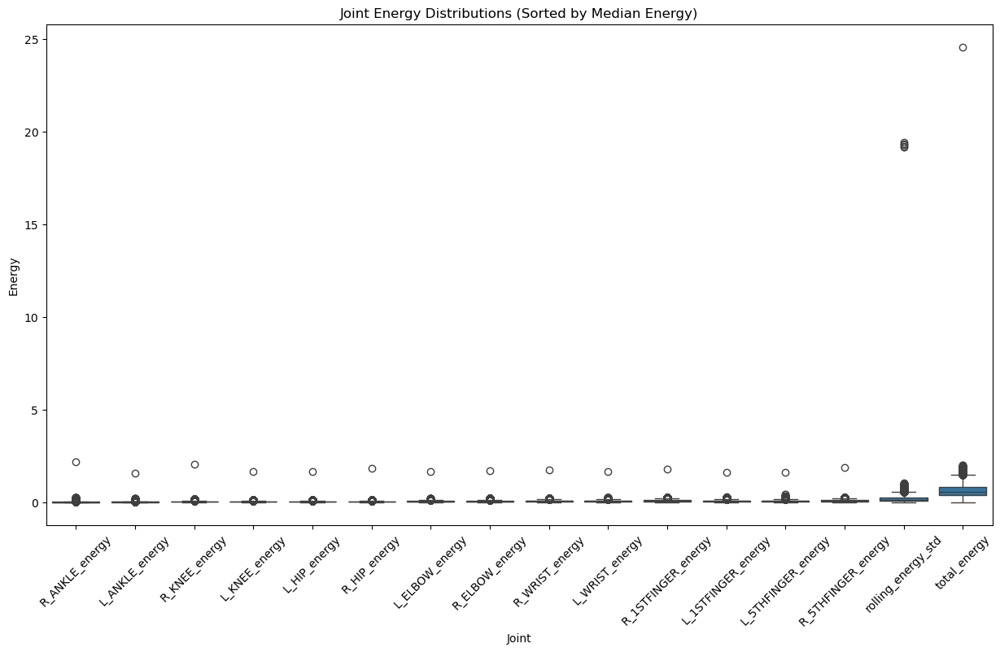
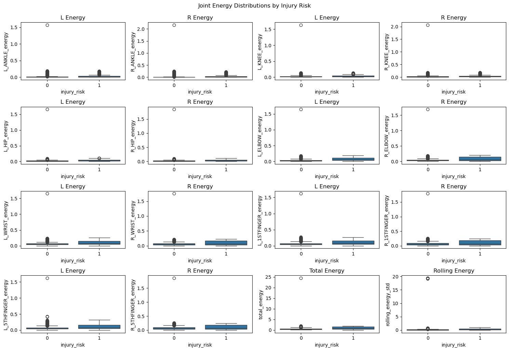
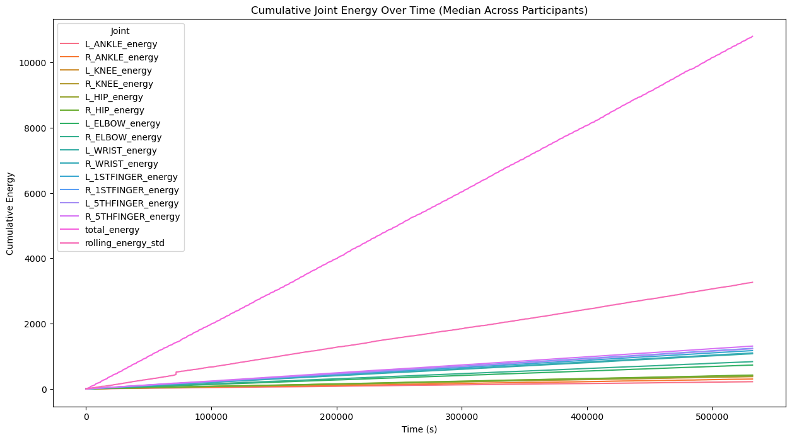
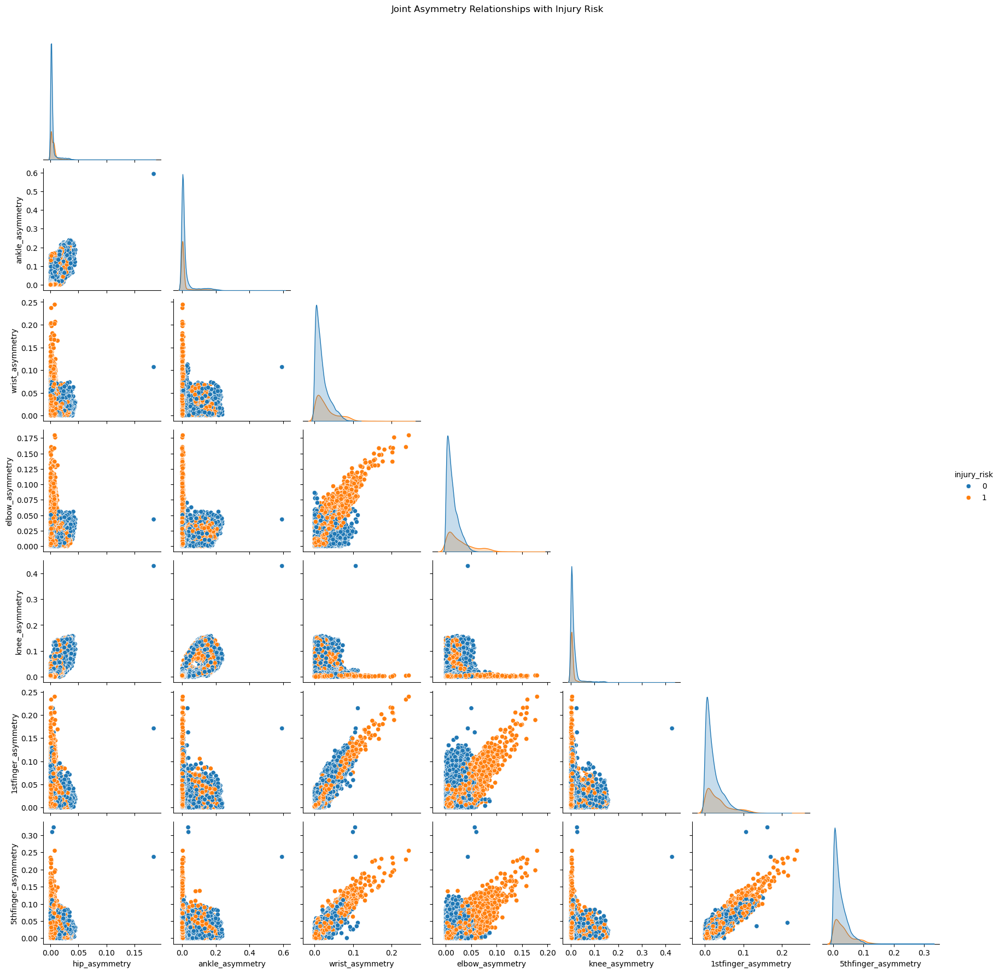
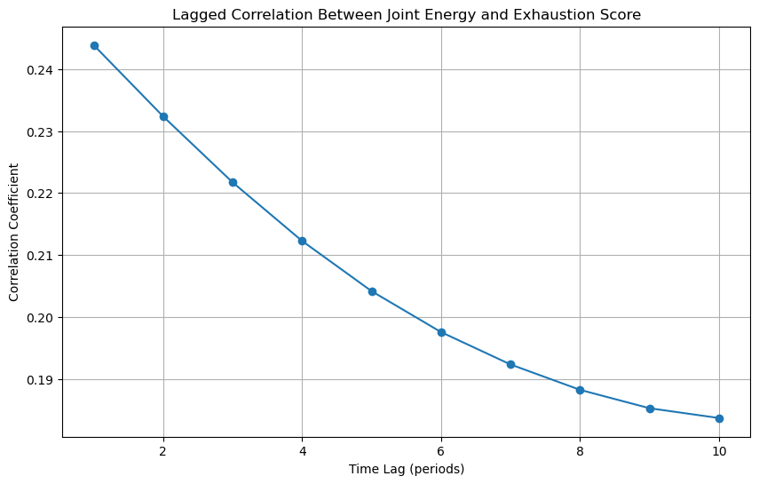
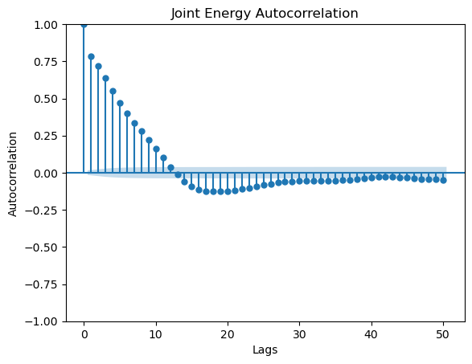
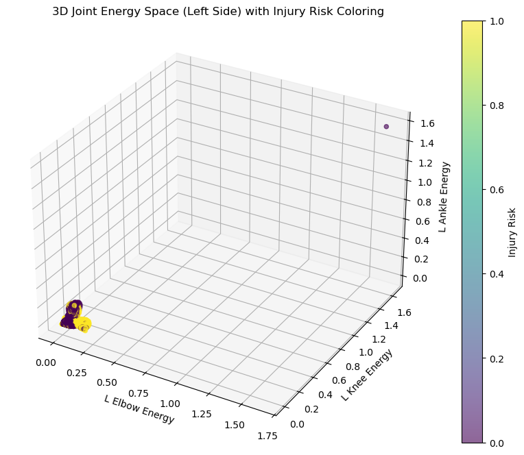
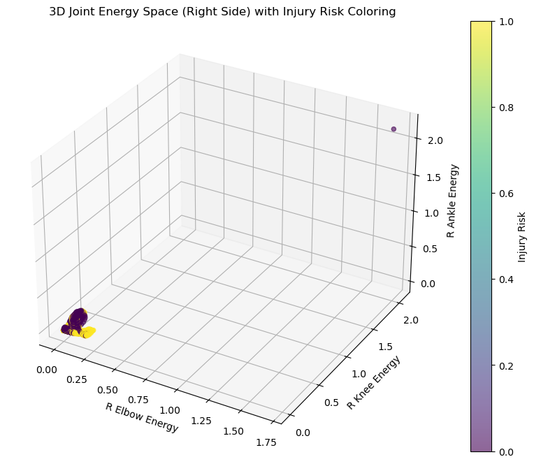
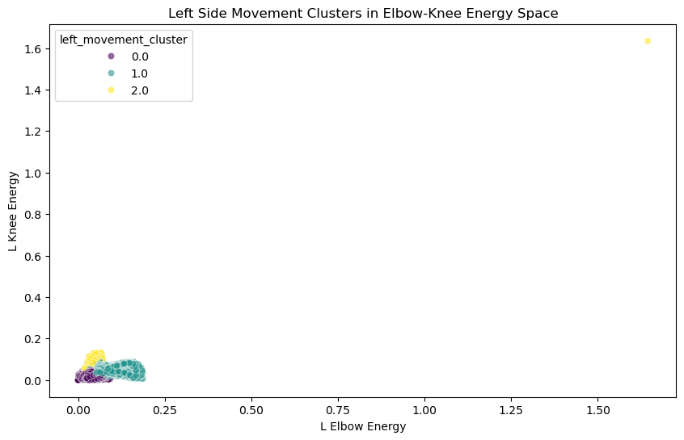
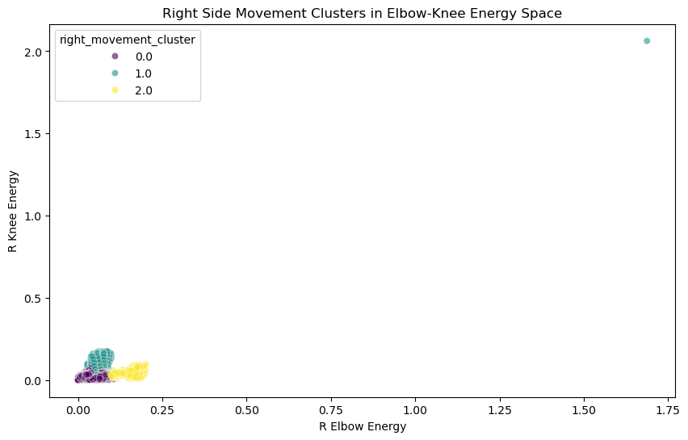

import numpy as np
import pandas as pd
import json
import sys
import logging
import matplotlib.pyplot as plt
import seaborn as sns
from tensorflow.keras.models import Sequential
from tensorflow.keras.layers import LSTM, Dense, Dropout
from tensorflow.keras.callbacks import EarlyStopping
from sklearn.preprocessing import StandardScaler
from sklearn.metrics import (
mean_absolute_error, r2_score, accuracy_score,
precision_score, recall_score, f1_score, roc_auc_score, confusion_matrix
)
import shap
# Configure logging
logging.basicConfig(level=logging.INFO, format='%(levelname)s: %(message)s')
###############################################################################
# HELPER FUNCTION FOR DEBUG OUTPUTS
###############################################################################
def _print_debug_info(step_name, df, new_columns=None, debug=False):
"""
Prints debug information about a DataFrame after a processing step.
When debug=True, prints:
- The step name.
- The DataFrame shape.
- If new_columns is provided (a list of column names), prints for each:
• Data type and a sample of unique values (up to 5).
When debug=False, prints a single-line message indicating step completion.
"""
if debug:
logging.info(f"Step [{step_name}]: DataFrame shape = {df.shape}")
if new_columns:
logging.info(f"New columns added: {new_columns}")
for col in new_columns:
sample = df[col].dropna().unique()[:5]
logging.info(f" - {col}: dtype={df[col].dtype}, sample values={sample}")
else:
logging.info(f"Step [{step_name}] completed.")
###############################################################################
# FUNCTION DEFINITIONS
###############################################################################
def load_data(csv_path, json_path, participant_id='P0001', debug=False):
"""
Loads the main dataset and participant information, then merges them.
Parameters:
- csv_path (str): Path to the main CSV file.
- json_path (str): Path to the participant information JSON file.
- participant_id (str): Participant identifier.
- debug (bool): If True, prints detailed debug info.
Returns:
- data (pd.DataFrame): Merged DataFrame.
"""
# Load main dataset
try:
data = pd.read_csv(csv_path)
logging.info(f"Loaded data from {csv_path} with shape {data.shape}")
except FileNotFoundError:
logging.error(f"File not found: {csv_path}")
sys.exit(1)
except Exception as e:
logging.error(f"Error loading {csv_path}: {e}")
sys.exit(1)
data['participant_id'] = participant_id
logging.info(f"Added 'participant_id' column with value '{participant_id}'")
# Load participant info
try:
with open(json_path, 'r') as file:
participant_info = json.load(file)
participant_df = pd.DataFrame([participant_info])
logging.info(f"Loaded participant information from {json_path}")
except FileNotFoundError:
logging.error(f"File not found: {json_path}")
sys.exit(1)
except json.JSONDecodeError:
logging.error(f"Invalid JSON format in {json_path}")
sys.exit(1)
except Exception as e:
logging.error(f"Error loading {json_path}: {e}")
sys.exit(1)
data = pd.merge(data, participant_df, on='participant_id', how='left')
logging.info(f"Merged participant data. New shape: {data.shape}")
_print_debug_info("load_data", data, debug=debug)
return data
def calculate_joint_angles(df, connections, debug=False):
"""
Calculates joint angles from coordinate data using vector mathematics.
Parameters:
df (pd.DataFrame): DataFrame containing joint coordinates.
connections (list): Joint connections defining biomechanical segments.
debug (bool): Enable debug logging.
Returns:
df (pd.DataFrame): Updated DataFrame with new angle columns.
"""
angle_columns = []
# Define angle calculation points for key joints
# Note: The new "KNEE" definition uses hip, knee, and ankle as the points.
angle_definitions = {
'SHOULDER': {
'left': ['L_HIP', 'L_SHOULDER', 'L_ELBOW'],
'right': ['R_HIP', 'R_SHOULDER', 'R_ELBOW']
},
'HIP': {
'left': ['L_SHOULDER', 'L_HIP', 'L_KNEE'],
'right': ['R_SHOULDER', 'R_HIP', 'R_KNEE']
},
'KNEE': {
'left': ['L_HIP', 'L_KNEE', 'L_ANKLE'],
'right': ['R_HIP', 'R_KNEE', 'R_ANKLE']
},
'ANKLE': {
'left': ['L_KNEE', 'L_ANKLE', 'L_5THTOE'],
'right': ['R_KNEE', 'R_ANKLE', 'R_5THTOE']
}
}
for joint, sides in angle_definitions.items():
for side in ['left', 'right']:
points = sides[side]
prefix = 'L' if side == 'left' else 'R'
# Build list of required coordinate columns for this calculation
required_cols = []
for point in points:
required_cols += [f'{point}_x', f'{point}_y', f'{point}_z']
if all(col in df.columns for col in required_cols):
# Calculate the vectors needed for the angle
vec1 = df[[f'{points[0]}_x', f'{points[0]}_y', f'{points[0]}_z']].values - \
df[[f'{points[1]}_x', f'{points[1]}_y', f'{points[1]}_z']].values
vec2 = df[[f'{points[2]}_x', f'{points[2]}_y', f'{points[2]}_z']].values - \
df[[f'{points[1]}_x', f'{points[1]}_y', f'{points[1]}_z']].values
# Compute the dot product and the norms of the vectors
dot_product = np.sum(vec1 * vec2, axis=1)
norm_product = np.linalg.norm(vec1, axis=1) * np.linalg.norm(vec2, axis=1)
# Compute the angle (in degrees) and add a small epsilon to avoid division by zero
angles = np.degrees(np.arccos(dot_product / (norm_product + 1e-8)))
col_name = f'{prefix}_{joint}_angle'
df[col_name] = angles
angle_columns.append(col_name)
if debug:
logging.info(f"Calculated {col_name} with mean: {angles.mean():.2f}°")
else:
logging.warning(f"Missing coordinates for {prefix}_{joint} angle calculation")
_print_debug_info("calculate_joint_angles", df, new_columns=angle_columns, debug=debug)
return df
def prepare_joint_features(data, debug=False):
"""
Aggregates joint-level energy and power, creates additional biomechanical features,
and adds new features:
- energy_acceleration: instantaneous rate of change of joint_energy.
- ankle_power_ratio: ratio of left to right ankle ongoing power.
- Additional asymmetry metrics for shoulders, hips, ankles, wrists, and feet.
- Power ratios for all joint pairs.
- Side-Specific Range-of-Motion (ROM) metrics (ROM, deviation, and binary extreme flag).
- Removal of the wrist_angle_release column if present.
Parameters:
- data (pd.DataFrame): Input DataFrame.
- debug (bool): If True, prints detailed debug outputs.
Returns:
- data (pd.DataFrame): Updated DataFrame with new features.
"""
step = "prepare_joint_features"
new_cols = []
connections = [
("R_EYE", "L_EYE"), ("R_EYE", "NOSE"), ("L_EYE", "NOSE"),
("R_EYE", "R_EAR"), ("L_EYE", "L_EAR"), ("R_SHOULDER", "L_SHOULDER"),
("R_SHOULDER", "R_ELBOW"), ("L_SHOULDER", "L_ELBOW"), ("R_ELBOW", "R_WRIST"),
("L_ELBOW", "L_WRIST"), ("R_SHOULDER", "R_HIP"), ("L_SHOULDER", "L_HIP"),
("R_HIP", "L_HIP"), ("R_HIP", "R_KNEE"), ("L_HIP", "L_KNEE"),
("R_KNEE", "R_ANKLE"), ("L_KNEE", "L_ANKLE"), ("R_WRIST", "R_1STFINGER"),
("R_WRIST", "R_5THFINGER"), ("L_WRIST", "L_1STFINGER"), ("L_WRIST", "L_5THFINGER"),
("R_ANKLE", "R_1STTOE"), ("R_ANKLE", "R_5THTOE"), ("L_ANKLE", "L_1STTOE"),
("L_ANKLE", "L_5THTOE"), ("R_ANKLE", "R_CALC"), ("L_ANKLE", "L_CALC"),
("R_1STTOE", "R_5THTOE"), ("L_1STTOE", "L_5THTOE"), ("R_1STTOE", "R_CALC"),
("L_1STTOE", "L_CALC"), ("R_5THTOE", "R_CALC"), ("L_5THTOE", "L_CALC"),
("R_1STFINGER", "R_5THFINGER"), ("L_1STFINGER", "L_5THFINGER")
]
# Compute joint angles first.
data = calculate_joint_angles(data, connections, debug=debug)
# Rename participant anthropometrics if available.
if 'height_in_meters' in data.columns and 'weight__in_kg' in data.columns:
data['player_height_in_meters'] = data['height_in_meters']
data['player_weight__in_kg'] = data['weight__in_kg']
data.drop(['height_in_meters', 'weight__in_kg'], axis=1, inplace=True, errors='ignore')
new_cols.extend(['player_height_in_meters', 'player_weight__in_kg'])
logging.info("Renamed participant anthropometrics.")
else:
logging.warning("Participant anthropometric columns not found during renaming.")
# Identify joint energy and power columns.
joint_energy_columns = [col for col in data.columns if '_energy' in col and not ('by_trial' in col or 'overall' in col)]
print("Joint energy columns: ", joint_energy_columns)
joint_power_columns = [col for col in data.columns if '_ongoing_power' in col]
print("Joint power columns: ", joint_power_columns)
print("All angle columns: ", [col for col in data.columns if 'angle' in col])
logging.info(f"Identified {len(joint_energy_columns)} joint energy and {len(joint_power_columns)} joint power columns.")
if not joint_energy_columns:
logging.error("No joint energy columns found. Check naming conventions.")
sys.exit(1)
if not joint_power_columns:
logging.error("No joint power columns found. Check naming conventions.")
sys.exit(1)
# Create aggregated columns.
data['joint_energy'] = data[joint_energy_columns].sum(axis=1)
data['joint_power'] = data[joint_power_columns].sum(axis=1)
new_cols.extend(['joint_energy', 'joint_power'])
logging.info("Created aggregated 'joint_energy' and 'joint_power'.")
# --- NEW FEATURE: Energy Acceleration ---
if 'continuous_frame_time' in data.columns:
time_diff = data['continuous_frame_time'].diff().replace(0, 1e-6) # Avoid division by zero
data['energy_acceleration'] = data['joint_energy'].diff() / time_diff
data['energy_acceleration'] = data['energy_acceleration'].replace([np.inf, -np.inf], np.nan)
new_cols.append('energy_acceleration')
logging.info("Created 'energy_acceleration' as derivative of joint_energy over time.")
else:
logging.error("Missing 'continuous_frame_time' for energy_acceleration calculation.")
sys.exit(1)
# --- NEW FEATURE: Ankle Power Ratio ---
# For power, look for the '_ongoing_power' suffix.
if 'L_ANKLE_ongoing_power' in data.columns and 'R_ANKLE_ongoing_power' in data.columns:
data['ankle_power_ratio'] = data['L_ANKLE_ongoing_power'] / (data['R_ANKLE_ongoing_power'] + 1e-6)
new_cols.append('ankle_power_ratio')
logging.info("Created 'ankle_power_ratio' feature comparing left to right ankle ongoing power.")
else:
logging.warning("Ankle ongoing power columns not found; 'ankle_power_ratio' not created.")
# --- NEW FEATURES: Additional Asymmetry Metrics ---
additional_asymmetry_joints = ['hip', 'ankle', 'wrist', 'elbow', 'knee', '1stfinger', '5thfinger'] #, '1sttoe', '5thtoe' < ADD WHEN WE ADD TO DATA LOAD AND PREPARE IN MODULE %%writefile ml/feature_engineering/energy_exhaustion_metrics.py
for joint in additional_asymmetry_joints:
# Use joint.upper() for energy columns.
left_col = f"L_{joint.upper()}_energy"
right_col = f"R_{joint.upper()}_energy"
if left_col in data.columns and right_col in data.columns:
col_name = f"{joint}_asymmetry"
data[col_name] = np.abs(data[left_col] - data[right_col])
new_cols.append(col_name)
logging.info(f"Created asymmetry feature: {col_name}")
else:
logging.warning(f"Columns {left_col} and/or {right_col} not found; skipping {joint}_asymmetry.")
# --- NEW FEATURES: Power Ratios for All Joints ---
joints_for_power_ratio = additional_asymmetry_joints.copy()
if 'knee' not in joints_for_power_ratio:
joints_for_power_ratio.append('knee')
for joint in joints_for_power_ratio:
if joint == 'foot':
left_col = 'left_foot_power'
right_col = 'right_foot_power'
else:
# Construct expected column names with the suffix '_ongoing_power'
left_col = f"L_{joint.upper()}_ongoing_power"
right_col = f"R_{joint.upper()}_ongoing_power"
# Debug: log the expected column names.
logging.debug(f"Expecting power columns: {left_col} and {right_col}")
if left_col in data.columns and right_col in data.columns:
ratio_col = f"{joint}_power_ratio"
data[ratio_col] = data[left_col] / (data[right_col] + 1e-6)
new_cols.append(ratio_col)
logging.info(f"Created power ratio feature: {ratio_col} using columns {left_col} and {right_col}")
else:
logging.warning(f"Columns {left_col} and/or {right_col} not found; skipping {joint}_power_ratio.")
# --- NEW FEATURES: Side-Specific Range-of-Motion (ROM) Metrics ---
# For angles, the dataset uses joint, e.g., "L_shoulder_angle".
rom_joints = {
'KNEE': {'min': 120, 'max': 135},
'SHOULDER': {'min': 0, 'max': 150},
'HIP': {'min': 0, 'max': 120},
'ANKLE': {'min': 0, 'max': 20},
'WRIST': {'min': 0, 'max': 80}
}
for joint, thresholds in rom_joints.items():
for side in ['L', 'R']:
angle_col = f"{side}_{joint}_angle"
if angle_col in data.columns:
rom_col = f"{side}_{joint}_ROM"
data[rom_col] = data.groupby('trial_id')[angle_col].transform(lambda x: x.max() - x.min())
new_cols.append(rom_col)
logging.info(f"Computed ROM for {side} {joint} as {rom_col}")
deviation_col = f"{side}_{joint}_ROM_deviation"
normal_min = thresholds['min']
normal_max = thresholds['max']
data[deviation_col] = np.maximum(0, normal_min - data[rom_col]) + np.maximum(0, data[rom_col] - normal_max)
new_cols.append(deviation_col)
logging.info(f"Computed ROM deviation for {side} {joint} as {deviation_col}")
extreme_col = f"{side}_{joint}_ROM_extreme"
data[extreme_col] = ((data[rom_col] < normal_min) | (data[rom_col] > normal_max)).astype(int)
new_cols.append(extreme_col)
logging.info(f"Created binary flag for {side} {joint} ROM extremes: {extreme_col}")
else:
logging.info(f"Angle column '{angle_col}' not found; skipping ROM metrics for {side} {joint}.")
# --- Removal of Non-Contributing Features ---
if 'wrist_angle_release' in data.columns:
data.drop(columns=['wrist_angle_release'], inplace=True)
logging.info("Dropped 'wrist_angle_release' column as it is not helpful for the model.")
# --- Sort Data ---
if 'continuous_frame_time' in data.columns and 'participant_id' in data.columns:
data.sort_values(by=['participant_id', 'continuous_frame_time'], inplace=True)
data.reset_index(drop=True, inplace=True)
logging.info("Sorted data by 'participant_id' and 'continuous_frame_time'.")
else:
logging.error("Missing required columns for sorting ('participant_id', 'continuous_frame_time').")
sys.exit(1)
# --- Create Exhaustion Rate ---
if 'by_trial_exhaustion_score' in data.columns and 'by_trial_time' in data.columns:
data['exhaustion_rate'] = data['by_trial_exhaustion_score'].diff() / data['by_trial_time'].diff()
print("print all the columns with by_trial_exhaustion_score: ", [col for col in data.columns if 'by_trial_exhaustion_score' in col])
new_cols.append('exhaustion_rate')
logging.info("Created 'exhaustion_rate' feature.")
else:
logging.error("Missing columns for 'exhaustion_rate' calculation.")
sys.exit(1)
# --- Create Simulated Heart Rate ---
if 'by_trial_exhaustion_score' in data.columns and 'joint_energy' in data.columns:
data['simulated_HR'] = 60 + (data['by_trial_exhaustion_score'] * 1.5) + (data['joint_energy'] * 0.3)
new_cols.append('simulated_HR')
logging.info("Created 'simulated_HR' feature.")
else:
logging.error("Missing columns for 'simulated_HR' calculation.")
sys.exit(1)
_print_debug_info(step, data, new_columns=new_cols, debug=debug)
return data
def feature_engineering(data, window_size=5, debug=False):
"""Optimized feature engineering with vectorized operations."""
step = "feature_engineering"
new_cols = []
rolling_window = 20
required_columns = {
'base': ['by_trial_exhaustion_score', 'joint_power',
'simulated_HR', 'continuous_frame_time'],
'joints': ['by_trial_time']
}
# Validate columns upfront
missing = [col for col in required_columns['base'] if col not in data.columns]
if missing:
logging.error(f"Missing required columns: {missing}")
sys.exit(1)
# Vectorized temporal features
data['time_since_start'] = data['continuous_frame_time'] - data['continuous_frame_time'].min()
new_cols.append('time_since_start')
# For ball-related columns, fill with 0 when not in play
ball_cols = ['ball_speed', 'ball_velocity_x', 'ball_velocity_y', 'ball_velocity_z']
data[ball_cols] = data[ball_cols].fillna(0)
# For motion columns (dx, dy, dz), forward-fill missing values
motion_cols = ['dx', 'dy', 'dz']
data[motion_cols] = data[motion_cols].fillna(method='ffill').fillna(0)
# For rolling features, use min_periods=1 to avoid NaNs in early rows
roll_config = {
'power_avg_5': ('joint_power', 'mean'),
'rolling_power_std': ('joint_power', 'std'),
'rolling_hr_mean': ('simulated_HR', 'mean')
}
for new_col, (base_col, func) in roll_config.items():
data[new_col] = getattr(data[base_col].rolling(window_size, min_periods=1), func)() # <-- Add min_periods
# Optimized expanding quantile calculation
def safe_expanding_quantile(s):
return s.expanding().quantile(0.75).shift().fillna(0)
# --- OPTIONAL NEW FEATURE: Rolling Energy Standard Deviation ---
if 'joint_energy' in data.columns:
data['rolling_energy_std'] = data['joint_energy'].rolling(window=window_size, min_periods=1).std(ddof=0)
logging.info(f"Created 'rolling_energy_std' with sample: {data['rolling_energy_std'].head(10).tolist()}")
logging.info(f"Created 'rolling_energy_std' with window {window_size}.")
else:
logging.warning("Column 'joint_energy' missing for 'rolling_energy_std'.")
new_cols.append('rolling_energy_std')
# Vectorized exhaustion features
data['exhaustion_lag1'] = data['by_trial_exhaustion_score'].shift(1)
data['ema_exhaustion'] = data['by_trial_exhaustion_score'].ewm(span=10, adjust=False).mean()
data['rolling_exhaustion'] = data['by_trial_exhaustion_score'].rolling(rolling_window, min_periods=1).sum()
# Vectorized injury risk calculation
data['injury_risk'] = (data['rolling_exhaustion'] > safe_expanding_quantile(data['rolling_exhaustion'])).astype(int)
new_cols += ['exhaustion_lag1', 'ema_exhaustion', 'rolling_exhaustion', 'injury_risk']
# Joint features using vectorized operations
joints = ['ANKLE', 'WRIST', 'ELBOW', 'KNEE', 'HIP']
sides = ['L', 'R']
# Precompute time diffs once for all joints
dt = data['by_trial_time'].diff().replace(0, np.nan)
for joint in joints:
for side in sides:
joint_name = f"{side}_{joint}"
score_col = f'{joint_name}_energy_by_trial_exhaustion_score'
if score_col not in data.columns:
continue
# Vectorized joint features
data[f'{joint_name}_exhaustion_rate'] = data[score_col].diff() / dt
data[f'{joint_name}_rolling_exhaustion'] = data[score_col].rolling(rolling_window, min_periods=1).sum()
# Vectorized quantile comparison
rolling_series = data[f'{joint_name}_rolling_exhaustion']
data[f'{joint_name}_injury_risk'] = (rolling_series > safe_expanding_quantile(rolling_series)).astype(int)
new_cols.extend([
f'{joint_name}_exhaustion_rate',
f'{joint_name}_rolling_exhaustion',
f'{joint_name}_injury_risk'
])
# Selective NA dropping for lag features only
data.dropna(subset=['exhaustion_lag1'], inplace=True)
if debug:
_print_debug_info(step, data, new_columns=new_cols, debug=debug)
return data
def make_exhaustion_monotonic_and_time_to_zero(data):
# (A) Cumulative exhaustion example
data['cumulative_exhaustion'] = (
data.groupby('participant_id')['by_trial_exhaustion_score']
.cumsum()
)
# (B) Invert the raw exhaustion so that 1=Fresh, 0=Exhausted
data['remaining_capacity'] = 1.0 - data['by_trial_exhaustion_score']
# (C) Compute "time to 0 exhaustion"
data = data.sort_values(['participant_id', 'continuous_frame_time']).reset_index(drop=True)
times = data['continuous_frame_time'].values
exhaustion = data['by_trial_exhaustion_score'].values
time_to_zero = np.full(len(data), np.nan)
for i in range(len(data)):
if exhaustion[i] <= 0.0:
time_to_zero[i] = 0.0
else:
future_idxs = np.where(exhaustion[i:] <= 0.0)[0]
if len(future_idxs) > 0:
j = i + future_idxs[0]
time_to_zero[i] = times[j] - times[i]
else:
# If it never reaches 0 in the future, leave it as NaN or set a default
time_to_zero[i] = np.nan
data['time_to_zero_exhaustion'] = time_to_zero
return data
def add_simulated_player_metrics(df, window=5, debug=False):
"""
Adds simulated player metrics to mimic heart rate and fatigue.
New Metrics:
- simulated_HR_fake: Alternative simulated heart rate.
- fatigue_index_fake: Combined fatigue index.
- fatigue_rate_fake: Frame-by-frame rate of change of fatigue_index_fake.
- HR_variability_fake: Rolling standard deviation of simulated_HR_fake.
Parameters:
- df (pd.DataFrame): DataFrame with required columns (e.g., by_trial_exhaustion_score, joint_energy, overall_exhaustion_score, dt).
- window (int): Rolling window size for HR variability.
- debug (bool): If True, prints detailed debug outputs.
Returns:
- df (pd.DataFrame): DataFrame with new simulated metrics.
"""
step = "add_simulated_player_metrics"
new_cols = []
# Use maximum joint_energy for scaling
max_joint_energy = df['joint_energy'].max() if 'joint_energy' in df.columns else 1
df['simulated_HR_fake'] = 60 + (df['by_trial_exhaustion_score'] * 2.0) + ((df['joint_energy'] / max_joint_energy) * 20)
new_cols.append('simulated_HR_fake')
df['fatigue_index_fake'] = df['overall_exhaustion_score'] + ((df['simulated_HR_fake'] - 60) / 100)
new_cols.append('fatigue_index_fake')
df['fatigue_rate_fake'] = df['fatigue_index_fake'].diff() / df['dt']
df['fatigue_rate_fake'] = df['fatigue_rate_fake'].fillna(0)
new_cols.append('fatigue_rate_fake')
df['HR_variability_fake'] = df['simulated_HR_fake'].rolling(window=window, min_periods=1).std()
new_cols.append('HR_variability_fake')
_print_debug_info(step, df, new_columns=new_cols, debug=debug)
return df
def joint_specific_analysis(data, joint_energy_columns, debug=False):
"""
Performs joint-specific analysis including:
- Energy distribution per joint.
- Injury risk analysis for each joint.
- Cumulative energy accumulation patterns.
Parameters:
- data (pd.DataFrame): Input DataFrame.
- joint_energy_columns (list): List of joint energy column names.
- debug (bool): If True, prints debug information.
"""
step = "joint_specific_analysis"
# Energy distribution across joints
joint_energy_melted = data[joint_energy_columns].melt(var_name='Joint', value_name='Energy')
plt.figure(figsize=(15, 8))
order = joint_energy_melted.groupby('Joint')['Energy'].median().sort_values().index
sns.boxplot(x='Joint', y='Energy', data=joint_energy_melted, order=order)
plt.title('Joint Energy Distributions (Sorted by Median Energy)')
plt.xticks(rotation=45)
plt.show()
if debug:
logging.info("Displayed boxplot for joint energy distributions.")
else:
logging.info("Energy distribution plot displayed.")
# Injury risk analysis: only run if 'injury_risk' exists.
if 'injury_risk' not in data.columns:
logging.warning("Column 'injury_risk' not found; skipping injury risk analysis in joint_specific_analysis.")
else:
num_plots = len(joint_energy_columns)
ncols = 4
nrows = int(np.ceil(num_plots / ncols))
plt.figure(figsize=(15, 10))
for i, joint in enumerate(joint_energy_columns, 1):
plt.subplot(nrows, ncols, i)
sns.boxplot(x='injury_risk', y=joint, data=data)
plt.title(f'{joint.split("_")[0].title()} Energy')
plt.tight_layout()
plt.suptitle('Joint Energy Distributions by Injury Risk', y=1.02)
plt.show()
if debug:
logging.info("Displayed injury risk analysis plots for joint energy.")
else:
logging.info("Injury risk analysis plots displayed.")
# Cumulative energy accumulation patterns
joint_cumulative = data.groupby('participant_id')[joint_energy_columns].cumsum()
joint_cumulative['time'] = data['continuous_frame_time']
joint_cumulative_melted = joint_cumulative.melt(id_vars='time', var_name='Joint', value_name='Cumulative Energy')
plt.figure(figsize=(15, 8))
sns.lineplot(x='time', y='Cumulative Energy', hue='Joint',
data=joint_cumulative_melted, estimator='median', errorbar=None)
plt.title('Cumulative Joint Energy Over Time (Median Across Participants)')
plt.xlabel('Time (s)')
plt.ylabel('Cumulative Energy')
plt.show()
if debug:
logging.info("Displayed cumulative joint energy plot.")
else:
logging.info("Cumulative energy plot displayed.")
_print_debug_info(step, data, debug=debug)
def movement_pattern_analysis(data, debug=False):
"""
Performs movement pattern analysis:
- Angular velocity histograms with KDE.
- Asymmetry analysis via pairplot.
Parameters:
- data (pd.DataFrame): Input DataFrame.
- debug (bool): If True, prints debug information.
"""
step = "movement_pattern_analysis"
# Angular velocity analysis
angular_columns = [col for col in data.columns if '_angular_velocity' in col]
if angular_columns:
fig, axes = plt.subplots(nrows=4, ncols=4, figsize=(20, 15))
axes = axes.flatten()
for ax, col in zip(axes, angular_columns):
sns.histplot(data[col], ax=ax, kde=True)
ax.set_title(f'{col.split("_")[0].title()} Angular Velocity')
for j in range(len(angular_columns), len(axes)):
fig.delaxes(axes[j])
plt.tight_layout()
plt.show()
logging.info("Displayed angular velocity histograms.")
else:
logging.info("No angular velocity columns found.")
# Asymmetry analysis
asymmetry_metrics = [col for col in data.columns if 'asymmetry' in col]
if 'injury_risk' in data.columns and asymmetry_metrics:
sns.pairplot(data[asymmetry_metrics + ['injury_risk']], hue='injury_risk', corner=True)
plt.suptitle('Joint Asymmetry Relationships with Injury Risk', y=1.02)
plt.show()
logging.info("Displayed asymmetry pairplot.")
else:
logging.info("Required columns for asymmetry analysis not found.")
_print_debug_info(step, data, debug=debug)
def temporal_analysis_enhancements(data, debug=False):
"""
Performs temporal analysis enhancements:
- Computes lagged correlations between joint energy and exhaustion score.
- Plots autocorrelation of joint energy.
Parameters:
- data (pd.DataFrame): Input DataFrame.
- debug (bool): If True, prints debug information.
"""
step = "temporal_analysis_enhancements"
max_lag = 10
lagged_corrs = []
for lag in range(1, max_lag + 1):
corr_val = data['joint_energy'].corr(data['by_trial_exhaustion_score'].shift(lag))
lagged_corrs.append(corr_val)
plt.figure(figsize=(10, 6))
plt.plot(range(1, max_lag + 1), lagged_corrs, marker='o')
plt.title('Lagged Correlation Between Joint Energy and Exhaustion Score')
plt.xlabel('Time Lag (periods)')
plt.ylabel('Correlation Coefficient')
plt.grid(True)
plt.show()
from statsmodels.graphics.tsaplots import plot_acf
plt.figure(figsize=(12, 6))
plot_acf(data['joint_energy'].dropna(), lags=50, alpha=0.05)
plt.title('Joint Energy Autocorrelation')
plt.xlabel('Lags')
plt.ylabel('Autocorrelation')
plt.show()
_print_debug_info(step, data, debug=debug)
def multivariate_analysis(data, joint_energy_columns, debug=False):
"""
Performs multivariate analysis separately for left- and right-sided joints:
- 3D visualization of joint energy interactions for each side.
- KMeans clustering on selected features for each side.
Parameters:
- data (pd.DataFrame): Input DataFrame.
- joint_energy_columns (list): List of all joint energy columns.
- debug (bool): If True, prints debug information.
"""
step = "multivariate_analysis"
# --- 3D Visualization: Left Side ---
required_left = ['L_ELBOW_energy', 'L_KNEE_energy', 'L_ANKLE_energy', 'injury_risk']
if all(col in data.columns for col in required_left):
from mpl_toolkits.mplot3d import Axes3D
fig = plt.figure(figsize=(12, 8))
ax = fig.add_subplot(111, projection='3d')
scatter = ax.scatter(data['L_ELBOW_energy'],
data['L_KNEE_energy'],
data['L_ANKLE_energy'],
c=data['injury_risk'],
cmap='viridis',
alpha=0.6)
ax.set_xlabel('L Elbow Energy')
ax.set_ylabel('L Knee Energy')
ax.set_zlabel('L Ankle Energy')
plt.title('3D Joint Energy Space (Left Side) with Injury Risk Coloring')
plt.colorbar(scatter, label='Injury Risk')
plt.show()
else:
logging.info("Required left-side columns for 3D analysis not found; skipping left side 3D plot.")
# --- 3D Visualization: Right Side ---
required_right = ['R_ELBOW_energy', 'R_KNEE_energy', 'R_ANKLE_energy', 'injury_risk']
if all(col in data.columns for col in required_right):
from mpl_toolkits.mplot3d import Axes3D
fig = plt.figure(figsize=(12, 8))
ax = fig.add_subplot(111, projection='3d')
scatter = ax.scatter(data['R_ELBOW_energy'],
data['R_KNEE_energy'],
data['R_ANKLE_energy'],
c=data['injury_risk'],
cmap='viridis',
alpha=0.6)
ax.set_xlabel('R Elbow Energy')
ax.set_ylabel('R Knee Energy')
ax.set_zlabel('R Ankle Energy')
plt.title('3D Joint Energy Space (Right Side) with Injury Risk Coloring')
plt.colorbar(scatter, label='Injury Risk')
plt.show()
else:
logging.info("Required right-side columns for 3D analysis not found; skipping right side 3D plot.")
# --- Clustering Analysis: Left Side ---
left_features = ['L_ELBOW_energy', 'L_KNEE_energy', 'L_ANKLE_energy']
# Optionally include asymmetry features if desired (they compare L vs R)
left_features = [feat for feat in left_features if feat in data.columns]
if left_features:
from sklearn.cluster import KMeans
from sklearn.preprocessing import StandardScaler
X_left = data[left_features].dropna()
X_left_scaled = StandardScaler().fit_transform(X_left)
kmeans_left = KMeans(n_clusters=3, random_state=42).fit(X_left_scaled)
data.loc[X_left.index, 'left_movement_cluster'] = kmeans_left.labels_
plt.figure(figsize=(10, 6))
sns.scatterplot(x='L_ELBOW_energy', y='L_KNEE_energy', hue='left_movement_cluster',
data=data, palette='viridis', alpha=0.6)
plt.title('Left Side Movement Clusters in Elbow-Knee Energy Space')
plt.xlabel('L Elbow Energy')
plt.ylabel('L Knee Energy')
plt.show()
else:
logging.info("Not enough left-side features available for clustering analysis.")
# --- Clustering Analysis: Right Side ---
right_features = ['R_ELBOW_energy', 'R_KNEE_energy', 'R_ANKLE_energy']
right_features = [feat for feat in right_features if feat in data.columns]
if right_features:
from sklearn.cluster import KMeans
from sklearn.preprocessing import StandardScaler
X_right = data[right_features].dropna()
X_right_scaled = StandardScaler().fit_transform(X_right)
kmeans_right = KMeans(n_clusters=3, random_state=42).fit(X_right_scaled)
data.loc[X_right.index, 'right_movement_cluster'] = kmeans_right.labels_
plt.figure(figsize=(10, 6))
sns.scatterplot(x='R_ELBOW_energy', y='R_KNEE_energy', hue='right_movement_cluster',
data=data, palette='viridis', alpha=0.6)
plt.title('Right Side Movement Clusters in Elbow-Knee Energy Space')
plt.xlabel('R Elbow Energy')
plt.ylabel('R Knee Energy')
plt.show()
else:
logging.info("Not enough right-side features available for clustering analysis.")
_print_debug_info(step, data, debug=debug)
def statistical_testing(data, joint_energy_columns, debug=False):
"""
Performs Mann-Whitney U tests on each joint energy metric between low and high injury risk groups.
Parameters:
- data (pd.DataFrame): Input DataFrame.
- joint_energy_columns (list): List of joint energy column names.
- debug (bool): If True, prints detailed test outputs.
Returns:
- results_df (pd.DataFrame): Summary table of test statistics.
"""
from scipy.stats import mannwhitneyu
step = "statistical_testing"
results = []
for joint in joint_energy_columns:
if joint in data.columns and 'injury_risk' in data.columns:
low_risk = data[data['injury_risk'] == 0][joint]
high_risk = data[data['injury_risk'] == 1][joint]
stat, p = mannwhitneyu(low_risk, high_risk, alternative='two-sided')
effect_size = stat / (len(low_risk) * len(high_risk)) if (len(low_risk) * len(high_risk)) > 0 else np.nan
results.append({
'Joint': joint.split('_')[0],
'U Statistic': stat,
'p-value': p,
'Effect Size': effect_size
})
results_df = pd.DataFrame(results).sort_values('p-value')
logging.info("Mann-Whitney U Test Results:")
logging.info(results_df)
_print_debug_info(step, data, debug=debug)
return results_df
###############################################################################
# MAIN SCRIPT
###############################################################################
if __name__ == "__main__":
# Run the main pipeline with debug output enabled.
debug=False
# """
# Main processing pipeline:
# 1. Loads and merges data.
# 2. Prepares joint features.
# 3. Performs feature engineering.
# 4. Adds simulated player metrics.
# 5. Executes various analyses (joint-specific, movement pattern, temporal, multivariate, statistical, and fatigue-injury interaction).
# Parameters:
# - debug (bool): Controls verbose debug output.
# - csv_path (str): Path to input CSV file.
# - json_path (str): Path to participant info JSON.
# """
csv_path="../../data/processed/final_granular_dataset.csv"
json_path="../../data/basketball/freethrow/participant_information.json"
data = load_data(csv_path, json_path, debug=debug)
data = prepare_joint_features(data, debug=debug)
data = feature_engineering(data, debug=debug)
print(data.columns.tolist())
# data = add_simulated_player_metrics(data, window=5, debug=debug)
# For demonstration, define features/targets (you can adjust these as needed)
features_exhaustion = [
'joint_power',
'joint_energy',
'elbow_asymmetry',
'wrist_angle',
'exhaustion_lag1',
'power_avg_5',
'simulated_HR',
'player_height_in_meters',
'player_weight__in_kg'
]
target_exhaustion = 'by_trial_exhaustion_score'
features_injury = [
'joint_power',
'joint_energy',
'elbow_asymmetry',
'knee_asymmetry',
'wrist_angle',
'exhaustion_lag1',
'power_avg_5',
'simulated_HR',
'player_height_in_meters',
'player_weight__in_kg'
]
target_injury = 'injury_risk'
# Identify joint energy columns (excluding the aggregated 'joint_energy')
joint_energy_columns = [
col for col in data.columns
if '_energy' in col and not ('by_trial' in col or 'overall' in col) and col != 'joint_energy'
]
logging.info(f"Joint Energy Columns after excluding 'joint_energy' ({len(joint_energy_columns)}): {joint_energy_columns}")
# Execute analysis functions
joint_specific_analysis(data, joint_energy_columns, debug=debug)
movement_pattern_analysis(data, debug=debug)
temporal_analysis_enhancements(data, debug=debug)
multivariate_analysis(data, joint_energy_columns, debug=debug)
statistical_testing(data, joint_energy_columns, debug=debug)
logging.info("Processing pipeline completed successfully.")INFO: Loaded data from ../../data/processed/final_granular_dataset.csv with shape (16047, 214)
INFO: Added 'participant_id' column with value 'P0001'
INFO: Loaded participant information from ../../data/basketball/freethrow/participant_information.json
INFO: Merged participant data. New shape: (16047, 217)
INFO: Step [load_data] completed.
INFO: Step [calculate_joint_angles] completed.
INFO: Renamed participant anthropometrics.
INFO: Identified 15 joint energy and 14 joint power columns.
INFO: Created aggregated 'joint_energy' and 'joint_power'.
INFO: Created 'energy_acceleration' as derivative of joint_energy over time.
INFO: Created 'ankle_power_ratio' feature comparing left to right ankle ongoing power.
INFO: Created asymmetry feature: hip_asymmetry
INFO: Created asymmetry feature: ankle_asymmetry
INFO: Created asymmetry feature: wrist_asymmetry
INFO: Created asymmetry feature: elbow_asymmetry
INFO: Created asymmetry feature: knee_asymmetry
INFO: Created asymmetry feature: 1stfinger_asymmetry
INFO: Created asymmetry feature: 5thfinger_asymmetry
INFO: Created power ratio feature: hip_power_ratio using columns L_HIP_ongoing_power and R_HIP_ongoing_power
INFO: Created power ratio feature: ankle_power_ratio using columns L_ANKLE_ongoing_power and R_ANKLE_ongoing_power
INFO: Created power ratio feature: wrist_power_ratio using columns L_WRIST_ongoing_power and R_WRIST_ongoing_power
INFO: Created power ratio feature: elbow_power_ratio using columns L_ELBOW_ongoing_power and R_ELBOW_ongoing_power
INFO: Created power ratio feature: knee_power_ratio using columns L_KNEE_ongoing_power and R_KNEE_ongoing_power
INFO: Created power ratio feature: 1stfinger_power_ratio using columns L_1STFINGER_ongoing_power and R_1STFINGER_ongoing_power
INFO: Created power ratio feature: 5thfinger_power_ratio using columns L_5THFINGER_ongoing_power and R_5THFINGER_ongoing_power
INFO: Computed ROM for L KNEE as L_KNEE_ROM
INFO: Computed ROM deviation for L KNEE as L_KNEE_ROM_deviation
INFO: Created binary flag for L KNEE ROM extremes: L_KNEE_ROM_extreme
INFO: Computed ROM for R KNEE as R_KNEE_ROM
INFO: Computed ROM deviation for R KNEE as R_KNEE_ROM_deviation
INFO: Created binary flag for R KNEE ROM extremes: R_KNEE_ROM_extreme
INFO: Computed ROM for L SHOULDER as L_SHOULDER_ROM
INFO: Computed ROM deviation for L SHOULDER as L_SHOULDER_ROM_deviation
INFO: Created binary flag for L SHOULDER ROM extremes: L_SHOULDER_ROM_extreme
INFO: Computed ROM for R SHOULDER as R_SHOULDER_ROM
INFO: Computed ROM deviation for R SHOULDER as R_SHOULDER_ROM_deviation
INFO: Created binary flag for R SHOULDER ROM extremes: R_SHOULDER_ROM_extreme
INFO: Computed ROM for L HIP as L_HIP_ROM
INFO: Computed ROM deviation for L HIP as L_HIP_ROM_deviation
INFO: Created binary flag for L HIP ROM extremes: L_HIP_ROM_extreme
INFO: Computed ROM for R HIP as R_HIP_ROM
INFO: Computed ROM deviation for R HIP as R_HIP_ROM_deviation
INFO: Created binary flag for R HIP ROM extremes: R_HIP_ROM_extreme
INFO: Computed ROM for L ANKLE as L_ANKLE_ROM
INFO: Computed ROM deviation for L ANKLE as L_ANKLE_ROM_deviation
INFO: Created binary flag for L ANKLE ROM extremes: L_ANKLE_ROM_extreme
INFO: Computed ROM for R ANKLE as R_ANKLE_ROM
INFO: Computed ROM deviation for R ANKLE as R_ANKLE_ROM_deviation
INFO: Created binary flag for R ANKLE ROM extremes: R_ANKLE_ROM_extreme
INFO: Angle column 'L_WRIST_angle' not found; skipping ROM metrics for L WRIST.
INFO: Angle column 'R_WRIST_angle' not found; skipping ROM metrics for R WRIST.
INFO: Sorted data by 'participant_id' and 'continuous_frame_time'.
INFO: Created 'exhaustion_rate' feature.
INFO: Created 'simulated_HR' feature.
INFO: Step [prepare_joint_features] completed.
C:\Users\ghadf\AppData\Local\Temp\ipykernel_28908\333979470.py:394: FutureWarning: DataFrame.fillna with 'method' is deprecated and will raise in a future version. Use obj.ffill() or obj.bfill() instead.
data[motion_cols] = data[motion_cols].fillna(method='ffill').fillna(0)
INFO: Created 'rolling_energy_std' with sample: [0.0, 0.6225242794725895, 0.592331668013902, 0.5469698974921113, 0.5031647476376774, 0.0346469804150002, 0.05501279562072104, 0.06384083445684284, 0.05698938811919827, 0.039917330417864196]
INFO: Created 'rolling_energy_std' with window 5.Joint energy columns: ['L_ANKLE_energy', 'R_ANKLE_energy', 'L_KNEE_energy', 'R_KNEE_energy', 'L_HIP_energy', 'R_HIP_energy', 'L_ELBOW_energy', 'R_ELBOW_energy', 'L_WRIST_energy', 'R_WRIST_energy', 'L_1STFINGER_energy', 'R_1STFINGER_energy', 'L_5THFINGER_energy', 'R_5THFINGER_energy', 'total_energy']
Joint power columns: ['L_ANKLE_ongoing_power', 'R_ANKLE_ongoing_power', 'L_KNEE_ongoing_power', 'R_KNEE_ongoing_power', 'L_HIP_ongoing_power', 'R_HIP_ongoing_power', 'L_ELBOW_ongoing_power', 'R_ELBOW_ongoing_power', 'L_WRIST_ongoing_power', 'R_WRIST_ongoing_power', 'L_1STFINGER_ongoing_power', 'L_5THFINGER_ongoing_power', 'R_1STFINGER_ongoing_power', 'R_5THFINGER_ongoing_power']
All angle columns: ['entry_angle', 'elbow_angle', 'wrist_angle', 'knee_angle', 'initial_release_angle', 'calculated_release_angle', 'angle_difference', 'optimal_release_angle', 'L_SHOULDER_angle', 'R_SHOULDER_angle', 'L_HIP_angle', 'R_HIP_angle', 'L_KNEE_angle', 'R_KNEE_angle', 'L_ANKLE_angle', 'R_ANKLE_angle']
print all the columns with by_trial_exhaustion_score: ['by_trial_exhaustion_score', 'L_ANKLE_energy_by_trial_exhaustion_score', 'R_ANKLE_energy_by_trial_exhaustion_score', 'L_KNEE_energy_by_trial_exhaustion_score', 'R_KNEE_energy_by_trial_exhaustion_score', 'L_HIP_energy_by_trial_exhaustion_score', 'R_HIP_energy_by_trial_exhaustion_score', 'L_ELBOW_energy_by_trial_exhaustion_score', 'R_ELBOW_energy_by_trial_exhaustion_score', 'L_WRIST_energy_by_trial_exhaustion_score', 'R_WRIST_energy_by_trial_exhaustion_score', 'L_1STFINGER_energy_by_trial_exhaustion_score', 'R_1STFINGER_energy_by_trial_exhaustion_score', 'L_5THFINGER_energy_by_trial_exhaustion_score', 'R_5THFINGER_energy_by_trial_exhaustion_score']C:\Users\ghadf\AppData\Local\Temp\ipykernel_28908\333979470.py:443: PerformanceWarning: DataFrame is highly fragmented. This is usually the result of calling `frame.insert` many times, which has poor performance. Consider joining all columns at once using pd.concat(axis=1) instead. To get a de-fragmented frame, use `newframe = frame.copy()`
data[f'{joint_name}_rolling_exhaustion'] = data[score_col].rolling(rolling_window, min_periods=1).sum()
C:\Users\ghadf\AppData\Local\Temp\ipykernel_28908\333979470.py:447: PerformanceWarning: DataFrame is highly fragmented. This is usually the result of calling `frame.insert` many times, which has poor performance. Consider joining all columns at once using pd.concat(axis=1) instead. To get a de-fragmented frame, use `newframe = frame.copy()`
data[f'{joint_name}_injury_risk'] = (rolling_series > safe_expanding_quantile(rolling_series)).astype(int)
C:\Users\ghadf\AppData\Local\Temp\ipykernel_28908\333979470.py:442: PerformanceWarning: DataFrame is highly fragmented. This is usually the result of calling `frame.insert` many times, which has poor performance. Consider joining all columns at once using pd.concat(axis=1) instead. To get a de-fragmented frame, use `newframe = frame.copy()`
data[f'{joint_name}_exhaustion_rate'] = data[score_col].diff() / dt
C:\Users\ghadf\AppData\Local\Temp\ipykernel_28908\333979470.py:443: PerformanceWarning: DataFrame is highly fragmented. This is usually the result of calling `frame.insert` many times, which has poor performance. Consider joining all columns at once using pd.concat(axis=1) instead. To get a de-fragmented frame, use `newframe = frame.copy()`
data[f'{joint_name}_rolling_exhaustion'] = data[score_col].rolling(rolling_window, min_periods=1).sum()
C:\Users\ghadf\AppData\Local\Temp\ipykernel_28908\333979470.py:447: PerformanceWarning: DataFrame is highly fragmented. This is usually the result of calling `frame.insert` many times, which has poor performance. Consider joining all columns at once using pd.concat(axis=1) instead. To get a de-fragmented frame, use `newframe = frame.copy()`
data[f'{joint_name}_injury_risk'] = (rolling_series > safe_expanding_quantile(rolling_series)).astype(int)
INFO: Joint Energy Columns after excluding 'joint_energy' (16): ['L_ANKLE_energy', 'R_ANKLE_energy', 'L_KNEE_energy', 'R_KNEE_energy', 'L_HIP_energy', 'R_HIP_energy', 'L_ELBOW_energy', 'R_ELBOW_energy', 'L_WRIST_energy', 'R_WRIST_energy', 'L_1STFINGER_energy', 'R_1STFINGER_energy', 'L_5THFINGER_energy', 'R_5THFINGER_energy', 'total_energy', 'rolling_energy_std']['trial_id', 'result', 'landing_x', 'landing_y', 'entry_angle', 'frame_time', 'ball_x', 'ball_y', 'ball_z', 'R_EYE_x', 'R_EYE_y', 'R_EYE_z', 'L_EYE_x', 'L_EYE_y', 'L_EYE_z', 'NOSE_x', 'NOSE_y', 'NOSE_z', 'R_EAR_x', 'R_EAR_y', 'R_EAR_z', 'L_EAR_x', 'L_EAR_y', 'L_EAR_z', 'R_SHOULDER_x', 'R_SHOULDER_y', 'R_SHOULDER_z', 'L_SHOULDER_x', 'L_SHOULDER_y', 'L_SHOULDER_z', 'R_ELBOW_x', 'R_ELBOW_y', 'R_ELBOW_z', 'L_ELBOW_x', 'L_ELBOW_y', 'L_ELBOW_z', 'R_WRIST_x', 'R_WRIST_y', 'R_WRIST_z', 'L_WRIST_x', 'L_WRIST_y', 'L_WRIST_z', 'R_HIP_x', 'R_HIP_y', 'R_HIP_z', 'L_HIP_x', 'L_HIP_y', 'L_HIP_z', 'R_KNEE_x', 'R_KNEE_y', 'R_KNEE_z', 'L_KNEE_x', 'L_KNEE_y', 'L_KNEE_z', 'R_ANKLE_x', 'R_ANKLE_y', 'R_ANKLE_z', 'L_ANKLE_x', 'L_ANKLE_y', 'L_ANKLE_z', 'R_1STFINGER_x', 'R_1STFINGER_y', 'R_1STFINGER_z', 'R_5THFINGER_x', 'R_5THFINGER_y', 'R_5THFINGER_z', 'L_1STFINGER_x', 'L_1STFINGER_y', 'L_1STFINGER_z', 'L_5THFINGER_x', 'L_5THFINGER_y', 'L_5THFINGER_z', 'R_1STTOE_x', 'R_1STTOE_y', 'R_1STTOE_z', 'R_5THTOE_x', 'R_5THTOE_y', 'R_5THTOE_z', 'L_1STTOE_x', 'L_1STTOE_y', 'L_1STTOE_z', 'L_5THTOE_x', 'L_5THTOE_y', 'L_5THTOE_z', 'R_CALC_x', 'R_CALC_y', 'R_CALC_z', 'L_CALC_x', 'L_CALC_y', 'L_CALC_z', 'ball_speed', 'ball_velocity_x', 'ball_velocity_y', 'ball_velocity_z', 'overall_ball_velocity', 'ball_direction_x', 'ball_direction_y', 'ball_direction_z', 'computed_ball_velocity_x', 'computed_ball_velocity_y', 'computed_ball_velocity_z', 'dist_ball_R_1STFINGER', 'dist_ball_R_5THFINGER', 'dist_ball_L_1STFINGER', 'dist_ball_L_5THFINGER', 'ball_in_hands', 'shooting_motion', 'avg_shoulder_height', 'release_point_filter', 'dt', 'dx', 'dy', 'dz', 'L_ANKLE_ongoing_power', 'R_ANKLE_ongoing_power', 'L_KNEE_ongoing_power', 'R_KNEE_ongoing_power', 'L_HIP_ongoing_power', 'R_HIP_ongoing_power', 'L_ELBOW_ongoing_power', 'R_ELBOW_ongoing_power', 'L_WRIST_ongoing_power', 'R_WRIST_ongoing_power', 'L_1STFINGER_ongoing_power', 'L_5THFINGER_ongoing_power', 'R_1STFINGER_ongoing_power', 'R_5THFINGER_ongoing_power', 'elbow_angle', 'wrist_angle', 'knee_angle', 'player_height_in_meters', 'player_height_ft', 'initial_release_angle', 'calculated_release_angle', 'angle_difference', 'distance_to_basket', 'optimal_release_angle', 'by_trial_time', 'continuous_frame_time', 'L_ANKLE_energy', 'R_ANKLE_energy', 'L_KNEE_energy', 'R_KNEE_energy', 'L_HIP_energy', 'R_HIP_energy', 'L_ELBOW_energy', 'R_ELBOW_energy', 'L_WRIST_energy', 'R_WRIST_energy', 'L_1STFINGER_energy', 'R_1STFINGER_energy', 'L_5THFINGER_energy', 'R_5THFINGER_energy', 'total_energy', 'by_trial_energy', 'by_trial_exhaustion_score', 'overall_cumulative_energy', 'overall_exhaustion_score', 'L_ANKLE_energy_by_trial', 'L_ANKLE_energy_by_trial_exhaustion_score', 'L_ANKLE_energy_overall_cumulative', 'L_ANKLE_energy_overall_exhaustion_score', 'R_ANKLE_energy_by_trial', 'R_ANKLE_energy_by_trial_exhaustion_score', 'R_ANKLE_energy_overall_cumulative', 'R_ANKLE_energy_overall_exhaustion_score', 'L_KNEE_energy_by_trial', 'L_KNEE_energy_by_trial_exhaustion_score', 'L_KNEE_energy_overall_cumulative', 'L_KNEE_energy_overall_exhaustion_score', 'R_KNEE_energy_by_trial', 'R_KNEE_energy_by_trial_exhaustion_score', 'R_KNEE_energy_overall_cumulative', 'R_KNEE_energy_overall_exhaustion_score', 'L_HIP_energy_by_trial', 'L_HIP_energy_by_trial_exhaustion_score', 'L_HIP_energy_overall_cumulative', 'L_HIP_energy_overall_exhaustion_score', 'R_HIP_energy_by_trial', 'R_HIP_energy_by_trial_exhaustion_score', 'R_HIP_energy_overall_cumulative', 'R_HIP_energy_overall_exhaustion_score', 'L_ELBOW_energy_by_trial', 'L_ELBOW_energy_by_trial_exhaustion_score', 'L_ELBOW_energy_overall_cumulative', 'L_ELBOW_energy_overall_exhaustion_score', 'R_ELBOW_energy_by_trial', 'R_ELBOW_energy_by_trial_exhaustion_score', 'R_ELBOW_energy_overall_cumulative', 'R_ELBOW_energy_overall_exhaustion_score', 'L_WRIST_energy_by_trial', 'L_WRIST_energy_by_trial_exhaustion_score', 'L_WRIST_energy_overall_cumulative', 'L_WRIST_energy_overall_exhaustion_score', 'R_WRIST_energy_by_trial', 'R_WRIST_energy_by_trial_exhaustion_score', 'R_WRIST_energy_overall_cumulative', 'R_WRIST_energy_overall_exhaustion_score', 'L_1STFINGER_energy_by_trial', 'L_1STFINGER_energy_by_trial_exhaustion_score', 'L_1STFINGER_energy_overall_cumulative', 'L_1STFINGER_energy_overall_exhaustion_score', 'R_1STFINGER_energy_by_trial', 'R_1STFINGER_energy_by_trial_exhaustion_score', 'R_1STFINGER_energy_overall_cumulative', 'R_1STFINGER_energy_overall_exhaustion_score', 'L_5THFINGER_energy_by_trial', 'L_5THFINGER_energy_by_trial_exhaustion_score', 'L_5THFINGER_energy_overall_cumulative', 'L_5THFINGER_energy_overall_exhaustion_score', 'R_5THFINGER_energy_by_trial', 'R_5THFINGER_energy_by_trial_exhaustion_score', 'R_5THFINGER_energy_overall_cumulative', 'R_5THFINGER_energy_overall_exhaustion_score', 'participant_id', 'L_SHOULDER_angle', 'R_SHOULDER_angle', 'L_HIP_angle', 'R_HIP_angle', 'L_KNEE_angle', 'R_KNEE_angle', 'L_ANKLE_angle', 'R_ANKLE_angle', 'player_weight__in_kg', 'joint_energy', 'joint_power', 'energy_acceleration', 'ankle_power_ratio', 'hip_asymmetry', 'ankle_asymmetry', 'wrist_asymmetry', 'elbow_asymmetry', 'knee_asymmetry', '1stfinger_asymmetry', '5thfinger_asymmetry', 'hip_power_ratio', 'wrist_power_ratio', 'elbow_power_ratio', 'knee_power_ratio', '1stfinger_power_ratio', '5thfinger_power_ratio', 'L_KNEE_ROM', 'L_KNEE_ROM_deviation', 'L_KNEE_ROM_extreme', 'R_KNEE_ROM', 'R_KNEE_ROM_deviation', 'R_KNEE_ROM_extreme', 'L_SHOULDER_ROM', 'L_SHOULDER_ROM_deviation', 'L_SHOULDER_ROM_extreme', 'R_SHOULDER_ROM', 'R_SHOULDER_ROM_deviation', 'R_SHOULDER_ROM_extreme', 'L_HIP_ROM', 'L_HIP_ROM_deviation', 'L_HIP_ROM_extreme', 'R_HIP_ROM', 'R_HIP_ROM_deviation', 'R_HIP_ROM_extreme', 'L_ANKLE_ROM', 'L_ANKLE_ROM_deviation', 'L_ANKLE_ROM_extreme', 'R_ANKLE_ROM', 'R_ANKLE_ROM_deviation', 'R_ANKLE_ROM_extreme', 'exhaustion_rate', 'simulated_HR', 'time_since_start', 'power_avg_5', 'rolling_power_std', 'rolling_hr_mean', 'rolling_energy_std', 'exhaustion_lag1', 'ema_exhaustion', 'rolling_exhaustion', 'injury_risk', 'L_ANKLE_exhaustion_rate', 'L_ANKLE_rolling_exhaustion', 'L_ANKLE_injury_risk', 'R_ANKLE_exhaustion_rate', 'R_ANKLE_rolling_exhaustion', 'R_ANKLE_injury_risk', 'L_WRIST_exhaustion_rate', 'L_WRIST_rolling_exhaustion', 'L_WRIST_injury_risk', 'R_WRIST_exhaustion_rate', 'R_WRIST_rolling_exhaustion', 'R_WRIST_injury_risk', 'L_ELBOW_exhaustion_rate', 'L_ELBOW_rolling_exhaustion', 'L_ELBOW_injury_risk', 'R_ELBOW_exhaustion_rate', 'R_ELBOW_rolling_exhaustion', 'R_ELBOW_injury_risk', 'L_KNEE_exhaustion_rate', 'L_KNEE_rolling_exhaustion', 'L_KNEE_injury_risk', 'R_KNEE_exhaustion_rate', 'R_KNEE_rolling_exhaustion', 'R_KNEE_injury_risk', 'L_HIP_exhaustion_rate', 'L_HIP_rolling_exhaustion', 'L_HIP_injury_risk', 'R_HIP_exhaustion_rate', 'R_HIP_rolling_exhaustion', 'R_HIP_injury_risk']
INFO: Energy distribution plot displayed.
INFO: Using categorical units to plot a list of strings that are all parsable as floats or dates. If these strings should be plotted as numbers, cast to the appropriate data type before plotting.
INFO: Using categorical units to plot a list of strings that are all parsable as floats or dates. If these strings should be plotted as numbers, cast to the appropriate data type before plotting.
INFO: Using categorical units to plot a list of strings that are all parsable as floats or dates. If these strings should be plotted as numbers, cast to the appropriate data type before plotting.
INFO: Using categorical units to plot a list of strings that are all parsable as floats or dates. If these strings should be plotted as numbers, cast to the appropriate data type before plotting.
INFO: Using categorical units to plot a list of strings that are all parsable as floats or dates. If these strings should be plotted as numbers, cast to the appropriate data type before plotting.
INFO: Using categorical units to plot a list of strings that are all parsable as floats or dates. If these strings should be plotted as numbers, cast to the appropriate data type before plotting.
INFO: Using categorical units to plot a list of strings that are all parsable as floats or dates. If these strings should be plotted as numbers, cast to the appropriate data type before plotting.
INFO: Using categorical units to plot a list of strings that are all parsable as floats or dates. If these strings should be plotted as numbers, cast to the appropriate data type before plotting.
INFO: Using categorical units to plot a list of strings that are all parsable as floats or dates. If these strings should be plotted as numbers, cast to the appropriate data type before plotting.
INFO: Using categorical units to plot a list of strings that are all parsable as floats or dates. If these strings should be plotted as numbers, cast to the appropriate data type before plotting.
INFO: Using categorical units to plot a list of strings that are all parsable as floats or dates. If these strings should be plotted as numbers, cast to the appropriate data type before plotting.
INFO: Using categorical units to plot a list of strings that are all parsable as floats or dates. If these strings should be plotted as numbers, cast to the appropriate data type before plotting.
INFO: Using categorical units to plot a list of strings that are all parsable as floats or dates. If these strings should be plotted as numbers, cast to the appropriate data type before plotting.
INFO: Using categorical units to plot a list of strings that are all parsable as floats or dates. If these strings should be plotted as numbers, cast to the appropriate data type before plotting.
INFO: Using categorical units to plot a list of strings that are all parsable as floats or dates. If these strings should be plotted as numbers, cast to the appropriate data type before plotting.
INFO: Using categorical units to plot a list of strings that are all parsable as floats or dates. If these strings should be plotted as numbers, cast to the appropriate data type before plotting.
INFO: Using categorical units to plot a list of strings that are all parsable as floats or dates. If these strings should be plotted as numbers, cast to the appropriate data type before plotting.
INFO: Using categorical units to plot a list of strings that are all parsable as floats or dates. If these strings should be plotted as numbers, cast to the appropriate data type before plotting.
INFO: Using categorical units to plot a list of strings that are all parsable as floats or dates. If these strings should be plotted as numbers, cast to the appropriate data type before plotting.
INFO: Using categorical units to plot a list of strings that are all parsable as floats or dates. If these strings should be plotted as numbers, cast to the appropriate data type before plotting.
INFO: Using categorical units to plot a list of strings that are all parsable as floats or dates. If these strings should be plotted as numbers, cast to the appropriate data type before plotting.
INFO: Using categorical units to plot a list of strings that are all parsable as floats or dates. If these strings should be plotted as numbers, cast to the appropriate data type before plotting.
INFO: Using categorical units to plot a list of strings that are all parsable as floats or dates. If these strings should be plotted as numbers, cast to the appropriate data type before plotting.
INFO: Using categorical units to plot a list of strings that are all parsable as floats or dates. If these strings should be plotted as numbers, cast to the appropriate data type before plotting.
INFO: Using categorical units to plot a list of strings that are all parsable as floats or dates. If these strings should be plotted as numbers, cast to the appropriate data type before plotting.
INFO: Using categorical units to plot a list of strings that are all parsable as floats or dates. If these strings should be plotted as numbers, cast to the appropriate data type before plotting.
INFO: Using categorical units to plot a list of strings that are all parsable as floats or dates. If these strings should be plotted as numbers, cast to the appropriate data type before plotting.
INFO: Using categorical units to plot a list of strings that are all parsable as floats or dates. If these strings should be plotted as numbers, cast to the appropriate data type before plotting.
INFO: Using categorical units to plot a list of strings that are all parsable as floats or dates. If these strings should be plotted as numbers, cast to the appropriate data type before plotting.
INFO: Using categorical units to plot a list of strings that are all parsable as floats or dates. If these strings should be plotted as numbers, cast to the appropriate data type before plotting.
INFO: Using categorical units to plot a list of strings that are all parsable as floats or dates. If these strings should be plotted as numbers, cast to the appropriate data type before plotting.
INFO: Using categorical units to plot a list of strings that are all parsable as floats or dates. If these strings should be plotted as numbers, cast to the appropriate data type before plotting.
INFO: Injury risk analysis plots displayed.
INFO: Cumulative energy plot displayed.
INFO: Step [joint_specific_analysis] completed.
INFO: No angular velocity columns found.
INFO: Displayed asymmetry pairplot.
INFO: Step [movement_pattern_analysis] completed.
<Figure size 1200x600 with 0 Axes>
INFO: Step [temporal_analysis_enhancements] completed.

C:\Users\ghadf\AppData\Local\Temp\ipykernel_28908\333979470.py:742: PerformanceWarning: DataFrame is highly fragmented. This is usually the result of calling `frame.insert` many times, which has poor performance. Consider joining all columns at once using pd.concat(axis=1) instead. To get a de-fragmented frame, use `newframe = frame.copy()`
data.loc[X_left.index, 'left_movement_cluster'] = kmeans_left.labels_
C:\Users\ghadf\AppData\Local\Temp\ipykernel_28908\333979470.py:762: PerformanceWarning: DataFrame is highly fragmented. This is usually the result of calling `frame.insert` many times, which has poor performance. Consider joining all columns at once using pd.concat(axis=1) instead. To get a de-fragmented frame, use `newframe = frame.copy()`
data.loc[X_right.index, 'right_movement_cluster'] = kmeans_right.labels_
INFO: Step [multivariate_analysis] completed.
INFO: Mann-Whitney U Test Results:
INFO: Joint U Statistic p-value Effect Size
5 R 15510670.5 0.000000e+00 0.302223
6 L 10089392.5 0.000000e+00 0.196590
7 R 15218604.0 0.000000e+00 0.296532
8 L 15772759.5 0.000000e+00 0.307329
14 total 15160889.0 0.000000e+00 0.295407
4 L 16110172.0 5.298836e-291 0.313904
1 R 16111873.5 6.336392e-291 0.313937
2 L 16422890.0 2.133726e-272 0.319997
0 L 16594942.5 1.931523e-262 0.323350
10 L 16695748.0 1.142095e-256 0.325314
3 R 16717178.5 1.874515e-255 0.325731
12 L 17010556.0 4.163121e-239 0.331448
15 rolling 17114343.0 1.870689e-233 0.333470
9 R 20151904.0 3.549291e-98 0.392656
11 R 21567895.0 4.991695e-55 0.420247
13 R 21715797.0 2.990407e-51 0.423129
INFO: Step [statistical_testing] completed.
INFO: Processing pipeline completed successfully.